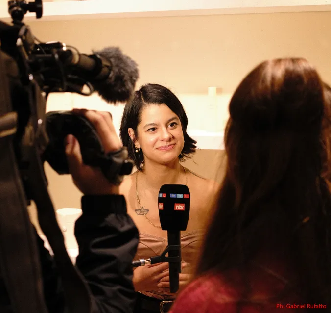

PRESS
INTERVIEWS & FEATURES
- EN Service95: What Turning To AI Bots For Relationship Advice Is Really Doing To Our Love Lives
- EN Mashable: Adult workers are fighting for digital privacy and security
- EN HEIST Berlin: Deepfake technology, digital violence and German law
- EN Interview with The Berliner
- EN Interview with WIRED
- EN Euractiv - Tech policy's blind spot
- EN VSquare - The most powerful man in porn
- EN Sex Tech Guide - UK Age Verification
- EN Playful TV feature
- EN Podcast interview Guten Tag
- EN Interview for Sensuali
- EN Podcast Interview with Anja Mack (YouTube)
- EN Intersectional Islands Podcast
- EN Spotify Podcast Episode: Sex in Berlin
- EN Spotify Podcast Episode: Was it good for you
- EN Spotify Podcast Episode: Women Watching Porn
- EN Podcast interview with Anja Mack (Spotify)
- EN Interview with Radio Pleasure Society
- EN Vice
- DE netzpolitik.org: Gemeinsam kämpfen – das sagen Pornodarsteller:innen zur Deepfake-Flut
- DE Interview for the Kraut Reporter
- DE Kraut Reporter - Seggs
- DE Interview with Alex TV
- PT Vamos Falar de Sexualidade - Entrevista
- PT Entrevista Eduardo Costa – Rádio Itatiaia
